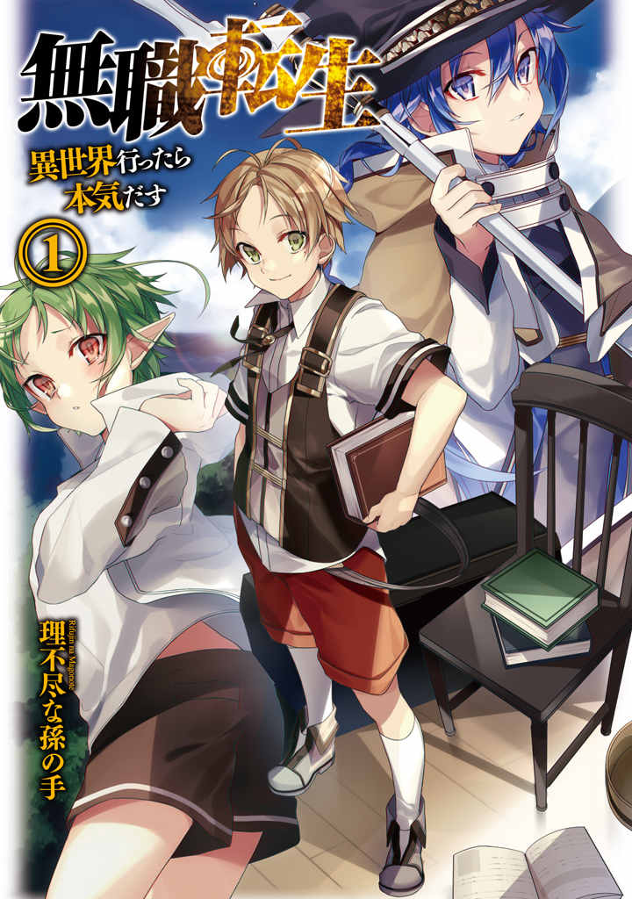

Volume 1 · English reader
Mushoku Tensei
Jobless Reincarnation: I'll Get Serious Once I'm in Another World
An unofficial, AI-assisted English fan translation.
Mature content: sexual themes, violence, and disturbing material.
Continue reading
Mature content: sexual themes, violence, and disturbing material.
Contents
- Prologue
- Episode 1: Did You Mean: Another World
- Episode 2: The Totally Grossed-Out Maid
- Episode 3: Magic Textbook
- Episode 4: Master
- Episode 5: Swordsmanship and Magic
- Episode 6: The Reason for Respect
- Episode 7: Friend
- Episode 8: Dense
- Episode 9: Emergency Family Meeting
- Episode 10: Stalled
- Episode 11: Separation
- Extra: The Mother of the Greyrat House

- Jobless Reincarnationtop left, large title logo
- I'll Get Serious Once I'm in Another Worldunder the title logo
- 1left, circled number under the subtitle
- Rifujin na Magonoteleft edge, vertical, lower half
- Rifujin na Magonoteleft edge, small vertical Latin letters beside the author name